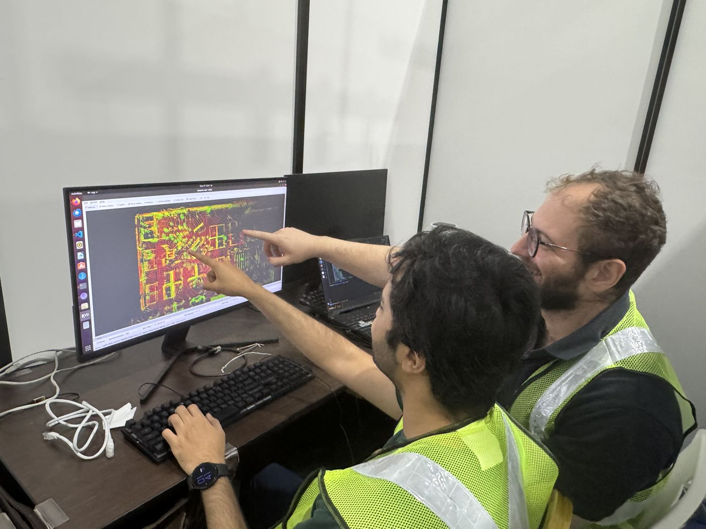

The product — CuTrack
LiDAR-grade analytics, without the LiDAR-grade bill
CuTrack pairs your existing CCTV with LiDAR placed only where you need centimeter precision. Cameras handle re-identification across zones. LiDAR provides anonymous 3D ground truth. Together they deliver insights neither sensor can produce alone.
- 01 Use your existing cameras. No rip-and-replace. CuTrack ingests CCTV feeds and runs person re-identification across the existing network.
- 02 Add LiDAR only where it matters. Entrances, queue zones, and high-occlusion areas get 3D ground truth. The rest stays camera-driven.
- 03 Privacy by design. Anonymous tracking, GDPR/PDPA-compliant, no biometric profiling. We track behaviour patterns — not identities.
- 04 Real-time spatial intelligence. Live dashboards, journey times, queue analytics, dwell time, and digital twins of any monitored space.
